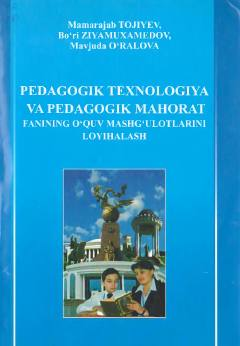

PTMagistratura talabalari uchun pedagogik texnologiya asosida dars loyihalash qo'llanmasi.
Ushbu o'quv qo'llanma pedagogik texnologiyaning o'zbek milliy modelini ta'lim jarayoniga tatbiq etish asosida o'quv mashg'ulotlarini loyihalashga bag'ishlangan. Magistratura talabalari va professor-o'qituvchilar uchun mo'ljallangan bo'lib, barcha fanlar bo'yicha dars loyihalarini tuzishda amaliy yo'riqnoma vazifasini o'taydi. Kitob O'zbekiston Respublikasi Oliy va o'rta maxsus ta'lim vazirligi tomonidan tavsiya etilgan va 2012-yilda qayta ishlangan 2-nashr sifatida chop etilgan.